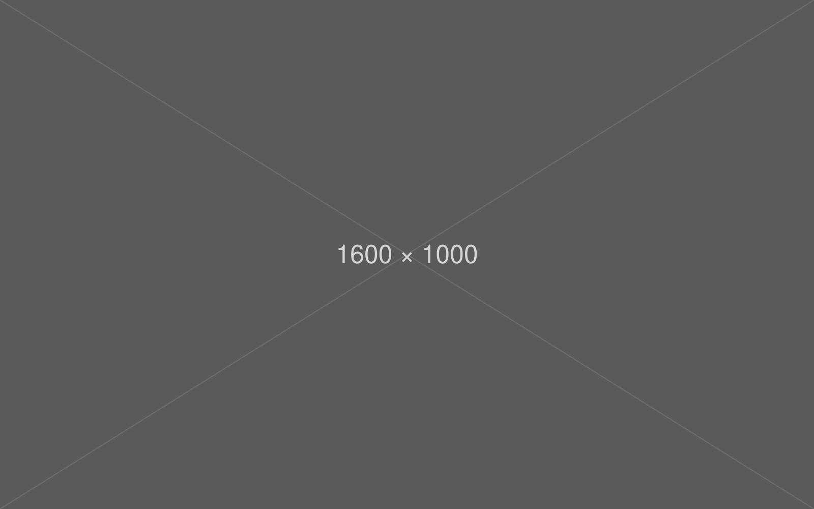
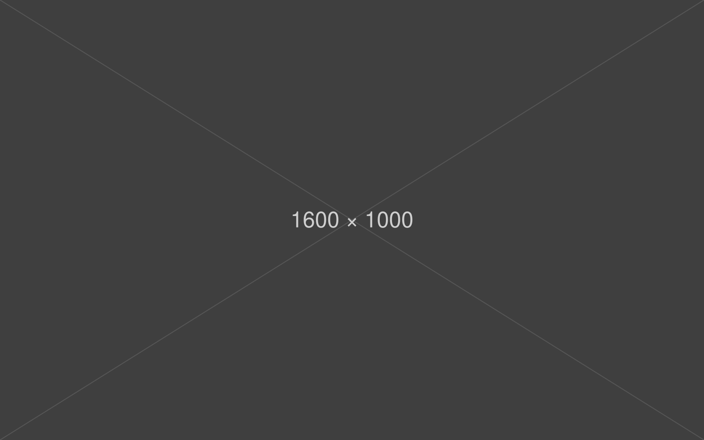
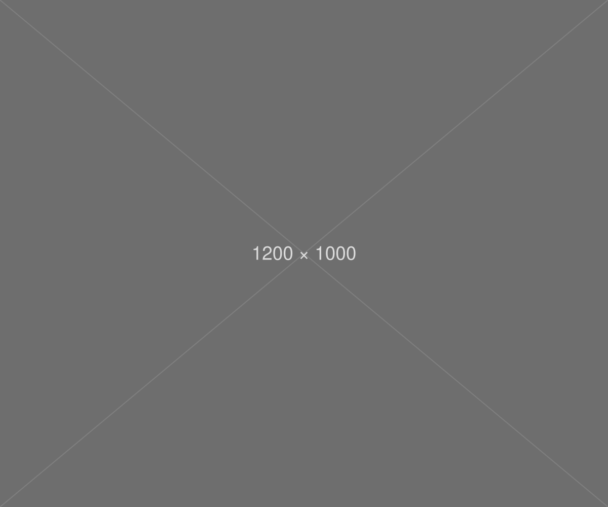
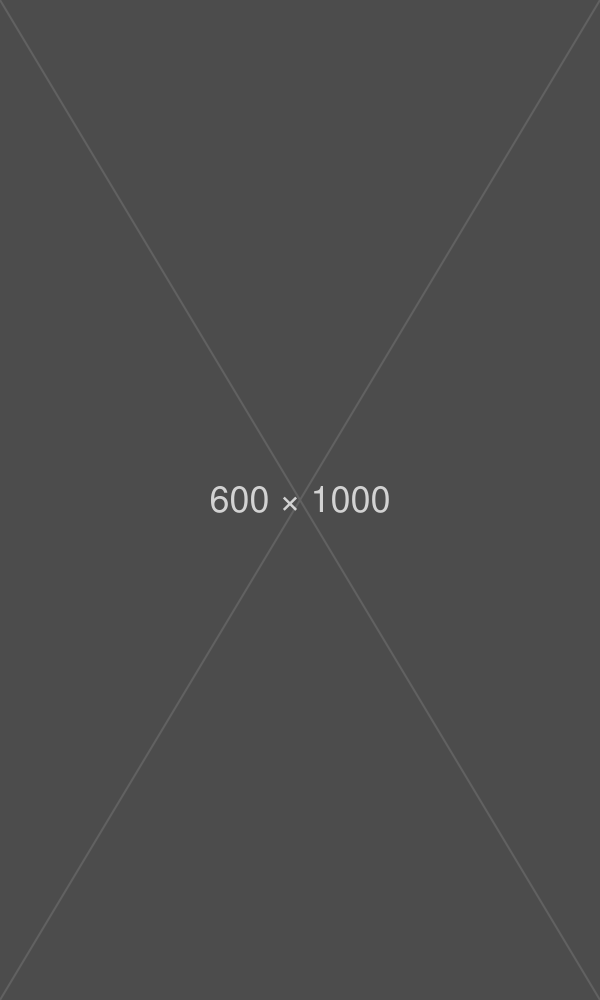

Context
Los Premios Narciso Yepes son unos galardones anuales de música de la Región de Murcia que llevan el nombre del guitarrista lorquino Narciso Yepes, una de las figuras más relevantes de la música española. El objetivo del proyecto consiste en desarrollar el diseño cartelístico de su X edición, dotando al evento de una imagen gráfica actual y contemporánea que refuerce su presencia como referente cultural dentro de la región.
El concepto de mi solución surge a raíz del análisis de su pensamiento y de su relación con la música. Yepes entendía la música como una forma de trascendencia y era su manera de conectar con su fe.
Concepto: La música te eleva.
Project images



